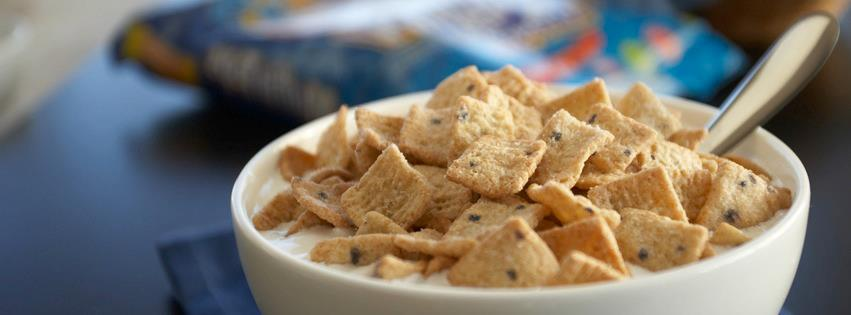

Cereal

Description
This bowl of blueberry muffin top cereal is one of the most underrated cereals on the market. It is better than Cocoa Puffs, Lucky Charms, and Reese's Puffs. This is the next generation of square sweetness tasting better than even the classic Cinnamon Toast Crunch. Go out and buy some today in any participating stores near you!
Ingredients
- Choice of milk (or milk substitute)
- blueberry muffin top cereal
Steps
- Obtain a large bowl that will fill you up for breakfast.
- Pour a repesectable amount of blueberry muffin top cereal into the bowl.
- Pour your milk or milk substitute into the bowl making sure the cereal to milk ratio is perfect.
- Grab a spoon and slightly mix the cereal for a second to make sure each morsel of square goodness has felt the cool milk.
- Eat and Enjoy!